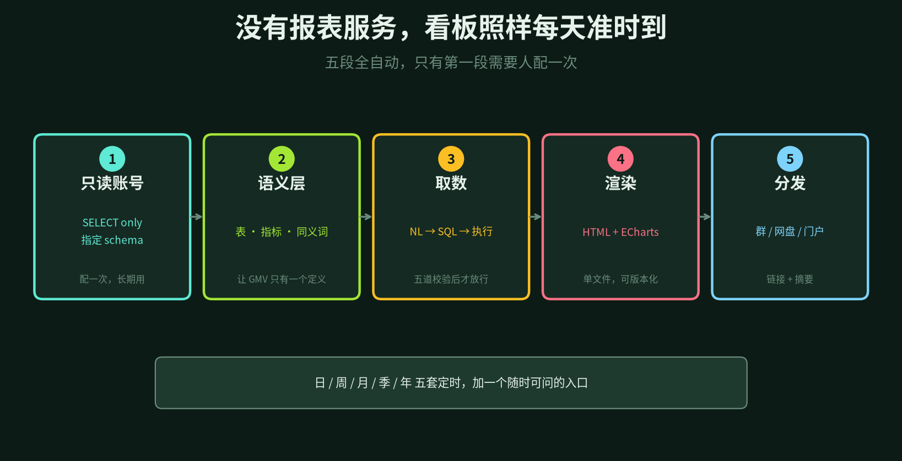
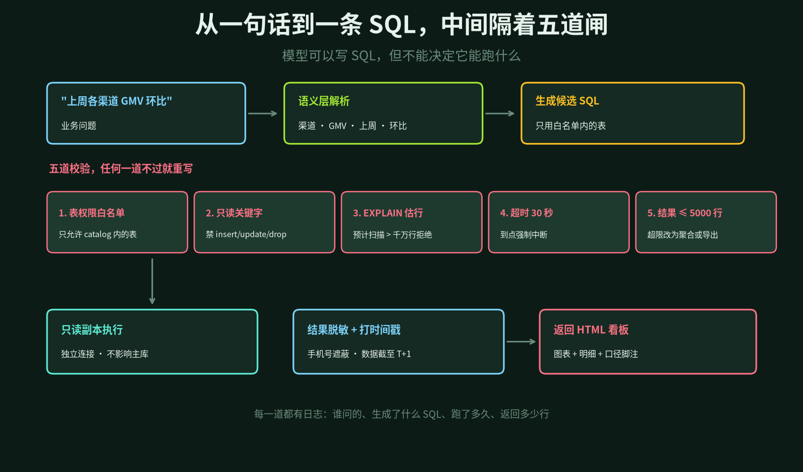
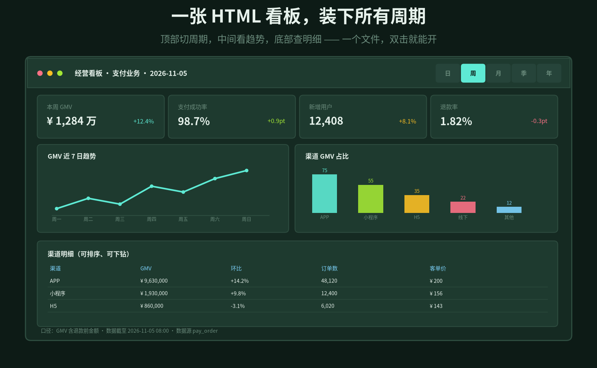
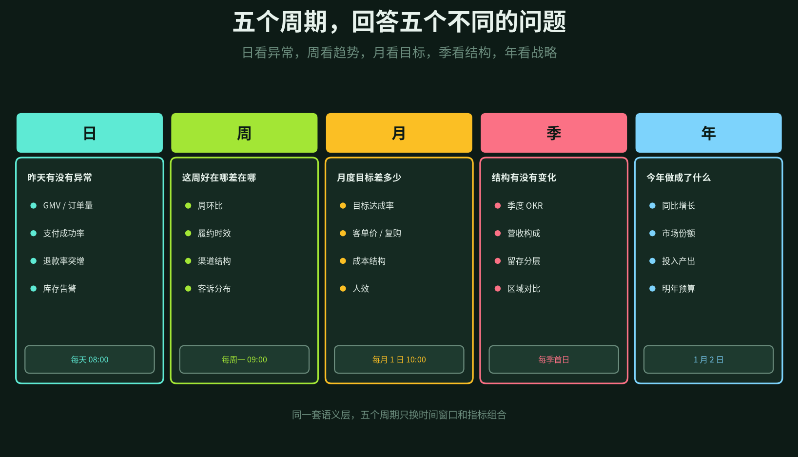

早上九点，业务群里有人问：昨天 GMV 多少？
数据组回复：需求已收到，排期到周四。
周四做出来，业务说口径不对——他们要的是支付口径，不是下单口径。改完再两天。等报表终于上线，那个活动已经结束了。
这就是报表服务的日常。不是技术不行，是链路太长：提需求、排期、建模、开发、发布、配权限、培训使用。每加一个看板，都要走一遍。
报表服务的瓶颈不在技术，在排队。
这篇聊的是另一种做法：给 Hermes 一个数据库只读账号，让它直接读生产库业务数据，生成单文件 HTML 看板。日、周、月、季、年五套定时任务，外加一个随时能问的入口。
1
为什么可以不要报表服务
先把「报表服务」拆开看。它其实由四层组成：数据接入、指标计算、展示、权限分发。
其中真正需要长期维护的，只有前两层里的口径和权限。展示层是纯消耗——每加一个图表，就要写一次前端、调一次样式、发一次版。
而「生成 HTML」这件事，本来就是数据的最后一步，没有理由单独养一个服务。
新链路的成本结构完全不一样。
· 一次性 配只读账号、整理语义层。这两件事无论做不做报表都要做。
· 边际成本接近零 每多一个看板，只是多一条 SQL 和一套模板，不涉及发版。
· 随时可改 口径写错，改一行配置，下一次生成就是对的。
适用边界也要先说清楚。它适合内部经营分析、中等复杂度的看板、能接受 T+1 或分钟级延迟的场景。对外大屏、强审计要求、复杂的自助钻取，还是交给专业 BI 工具更稳妥。

图 1 · 五段全自动，只有第一段需要人配一次
2
只读账号：权限要小到不能再小
这是整件事里唯一不能省的一步。账号配错，后面全是风险。
六条约束，一条都别少。
· 独立账号 不要复用应用账号，单独建一个，名字就叫 bi_readonly。
· 只给 SELECT 只授权指定的 dwd / dws schema，不给系统表，不给其他库。
· 只读副本 连从库或只读实例，绝不连主库。没有副本就先建一个。
· 连接限制 IP 白名单、最大连接数 3、statement_timeout 30 秒、只读事务。
· 敏感列脱敏 手机号、身份证、银行卡不要直接给。建视图，把 138****1234 这种格式写死在视图里。
· 审计留痕 谁问的、生成什么 SQL、跑了多久、返回多少行，全部落审计表，保留 90 天。
最后一条是铁律：永远不要给 AI 一个能写库的账号。哪怕你觉得它「不会乱来」。模型被提示词带偏的概率，远高于你愿意接受的水平。
3
语义层：让 GMV 只有一个定义
「昨天 GMV 多少」这句问题，能问出三个不同答案。
下单口径算所有创建成功的订单；支付口径只算已付款；结算口径还要扣掉退款。三个数字可能差 15%，但都叫 GMV。
如果不把这个说清楚，模型每次都会按它的「常识」选一个。今天算支付，明天算下单，月报和日报永远对不上。
所以必须先建一层语义层，包含三样东西。
· 表目录 表名、字段、类型、注释、业务负责人。模型靠它知道去查哪张表。
· 指标字典 每个指标的计算公式、时间口径、排除规则。这是最值钱的部分。
· 同义词 销售额、成交额、交易额，都映射到 gmv。
指标的定义要写到能执行的程度。「GMV = sum(pay_amount) where status = paid and is_test = 0」，这样模型才能生成对的 SQL，而不是靠猜。
口径一旦变更，要版本化。看板脚注里写清楚「口径 v3 · 数据截至 2026-11-05 08:00」，半年后有人质疑数字，你能立刻定位到是哪一版口径。
# ~/.hermes/config/bi-semantic.yaml
readonly_dsn: ${BI_READONLY_DSN}
allowed_schemas: [dwd, dws]
max_rows: 5000
statement_timeout: 30s
metrics:
gmv:
expr: sum(pay_amount)
filter: status = 'paid' and is_test = 0
time_field: pay_time
owner: 支付组
pay_success_rate:
expr: paid_orders / all_orders
time_field: create_time
synonyms:
gmv: [销售额, 成交额, 交易额]
4
从一句话到一条 SQL，中间隔着五道闸
模型可以写 SQL，但不能决定它能跑什么。这是两件事，必须分开。
流程是这样的：先把问题解析成「业务域 + 指标 + 维度 + 时间范围」，再基于语义层生成候选 SQL，然后过五道校验，最后才在只读副本上执行。
五道闸分别是：
① 表权限白名单 只允许语义层里登记过的表。出现任何陌生表名，直接拒绝。
② 只读关键字 出现 insert、update、delete、drop、alter、truncate，一律拒绝。这一条不能只靠正则，要过 SQL 解析器。
③ EXPLAIN 估行 执行前先 explain，预估扫描量超过千万行就拒绝，改为提示「加时间范围」。
④ 超时 30 秒 到点强制中断。慢查询对副本同样是伤害。
⑤ 结果行数 ≤ 5000 超了就改成聚合，或者提示导出。看板不需要五万行明细。
执行完之后还有一步：结果脱敏，并打上「数据截至」时间戳。用户看到的每个数字，都要知道它是什么时候的。
校验不过怎么办？允许模型重写一次，把拒绝原因喂回去。第二次还不过，就别再试了，直接告诉人「这个问题需要补语义层定义」。这比硬编一个能跑的 SQL 好得多。

图 2 · 从一句话到一条 SQL，中间隔着五道闸
5
HTML 看板：一个文件就够了
为什么是 HTML，不是 BI 工具的报表，也不是截图？
四个理由。
· 单文件 图表库内联，不依赖网络，双击就能打开，发到群里也不怕打不开。
· 可版本化 每天生成一个 bi-pay-2026-11-05.html，放进 Git。哪天数字变了，diff 一眼看出来。
· 可交互 能切周期、能排序、能下钻，比截图强太多。截图只能看，不能问。
· 可分发 企微文件、网盘归档、门户 iframe 嵌入，都是现成的。
一张标准看板的信息结构是固定的：顶部周期切换，第一行四个 KPI，第二行趋势图和结构图，底部明细表和口径脚注。
KPI 别超过四个。超过四个，看的人就一个都记不住。趋势图负责回答「有没有异常」，结构图负责回答「问题出在哪」，明细表负责回答「具体是哪一条」。
脚注必须写清楚三件事：指标口径、数据截至时间、数据源表。这三行字，能省掉后面无数次的「这个数怎么和我算的不一样」。

图 3 · 顶部切周期，中间看趋势，底部查明细
6
五个周期，回答五个不同的问题
五个周期不是把同一张看板换个时间窗口，而是回答五个层级不同的问题。指标不能重复堆，否则五张看板长得一模一样，没人看第二遍。
日：昨天有没有异常
读者是业务负责人和值班同学。核心指标是 GMV、订单量、支付成功率、退款率，加一组库存和告警。
它不回答「趋势好不好」，只回答「昨天有没有哪根线突然歪了」。比如退款率从 1.8% 跳到 4.2%，点开渠道结构，发现集中在某一个商户，再往下钻就是具体订单。这条链路应该在三十秒内走完。
周：这周好在哪，差在哪
读者是业务和运营。核心是周环比、履约时效、渠道结构、客诉分布。
周看板的价值在对比。单看一个数字没意义，要和上周比、和上月同期比、和同类渠道比。所以周看板里一定有一列「环比」，而且默认按环比排序。
月：目标还差多少
读者是部门负责人和财务。核心是目标达成率、客单价、复购、成本结构、人效。
月看板必须带目标线。一根目标线加一条实际曲线，比十个指标都有说服力。差多少、按当前速度能不能追上、需要补多少，三句话说完。
季：结构有没有变化
读者是管理层。核心是季度 OKR、营收构成、留存分层、区域对比。
季度看板不看绝对值，看占比变化。哪个业务的营收占比上升了，哪个渠道的留存掉了，哪个区域的增速在放缓。这些变化决定了下一季度资源往哪投。
年：今年做成了什么
读者是老板和董事会。核心是同比增长、市场份额、投入产出、明年预算。
年看板最忌讳堆数字。它应该像一页纸的战略复盘：三件做成的事、两件没做成的事、一个明年的判断。

图 4 · 日看异常，周看趋势，月看目标，季看结构，年看战略
7
配置：五个定时 + 一个随时入口
五个定时任务错峰执行，别都堆在整点。日任务 08:00，周任务周一 09:00，月任务 1 日 10:00，季任务季首日，年任务 1 月 2 日。
错峰的意义是避免同时扫库。五个任务如果都在 08:00 跑，只读副本的连接数瞬间打满，反而拖慢彼此。
# ~/.hermes/cron/jobs.json
{
"jobs": [
{ "name": "bi-daily",
"schedule": "0 8 * * *",
"script": "bi_render.py --period day" },
{ "name": "bi-weekly",
"schedule": "0 9 * * 1",
"script": "bi_render.py --period week" },
{ "name": "bi-monthly",
"schedule": "0 10 1 * *",
"script": "bi_render.py --period month" },
{ "name": "bi-quarterly",
"schedule": "0 8 1 1,4,7,10 *",
"script": "bi_render.py --period quarter" },
{ "name": "bi-yearly",
"schedule": "0 9 2 1 *",
"script": "bi_render.py --period year" }
]
}
增量计算是性能的关键。日看板只算昨天，周看板只算最近七天，月看板只算当月。不要每次都跑全量，那既慢又容易把副本压垮。
中间结果可以落成结果表或 parquet 文件，下次生成直接复用。趋势图那七个点，没必要每次重新查。
随时提问走另一个入口：同一个 Agent，同一个只读账号，同一套语义层。你在群里问「上周各渠道退款率」，它当场生成一张临时看板，链接回给你。
如果这张临时看板成了每天都要看的东西，就顺手存成「常用问题」，第二天它就自动出现在定时任务里。这是最自然的看板孵化方式——先用起来，再固化，而不是先提需求再排期。
分发也有讲究。群里发链接加三行摘要（最关键的三个数），网盘按年/月归档，门户用 iframe 嵌进去。三个地方各有各的用途：群是提醒，网盘是归档，门户是长期入口。
8
边界：别把看板当成真相
六条边界，写在这里省得以后再踩。
口径不是 AI 定的，是业务定的。 模型只能执行你写下的定义。定义错了，它生成得越顺，错得越离谱。
大表别全扫。 分区、索引、物化视图该做还是要做。AI 不会替你做数据库优化，它只会写一条看起来对的 SQL。
只读不等于无风险。 慢查询照样能拖垮只读副本，进而影响读写分离的读流量。超时和资源限制不是可选项。
数据延迟必须标出来。 T+1 的看板不要伪装成实时。脚注里写清楚「数据截至」，比任何解释都管用。
指标异常先怀疑管道。 数字突然翻倍，第一反应应该是「上游是不是重跑了」，而不是「业务爆发了」。
别替代专业 BI。 复杂的多维分析、自助钻取、千人千面的权限，还是交给 BI 工具。这套方案解决的是「日常经营看板」，不是「数据分析平台」。
说到底，这件事改变的不是「有没有报表」，是「从提问到看到数字」的等待时间。
以前是三天，现在是三分钟。以前要说服数据组排期，现在只要把问题说清楚。以前一个看板做完就固定了，现在它每天都在长——因为看它的人随时可以追问一句「为什么」。
让数据回到它该在的位置：不是躺在库里等排期，而是随时能回答一个具体的问题。